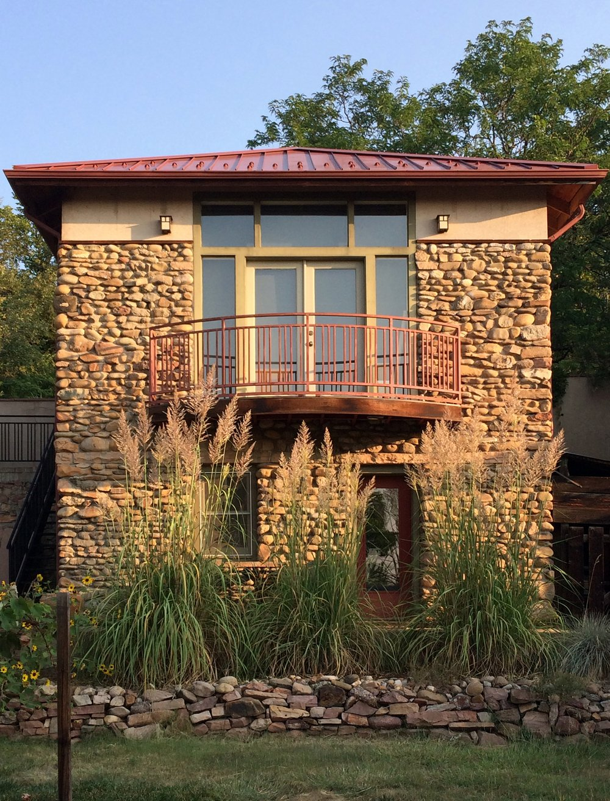

I had a graphic design career for fifty years and am now in
recovery from that career. I did some silk screen in college in the 1960s, a few prints in the 1980s
and then nothing until 2019 when I built a set up for silk screen in the garden level of my design
studio.
Although very small, the studio affords me the luxury of having every thing I need to
silkscreen in one place. With the exception of outputting film, which is done by the fine folks at
Anthem in San Francisco, I do everything by hand for each print.
The allure of silkscreen for
me is the smooth and vibrant color along with the crisp delineation of form.

Stencils are required to define the inking areas. To create the
stencils I
use one of two techniques. I hand cut paper stencils or screens are coated with a photo emulsion,
exposed to UV light, then washed out with a high pressure water spray. One screen is needed for each
color
to be printed.
Custom colors are mixed for each print, and tested beforehand on the edition
paper.
As each color is printed the sheets are hung up to dry for a day before going on to
the next color.
Although the process seems very mechanical, I’m finding there are always
printer’s gremlins that want to fool with the process so that adjustments are required on the fly.
Little
victories when you can adjust for them, very disappointing when you can not.
With small
prints my loss rate is around 10%, with large format multicolor prints my loss rate is closer to 50%.
Thus
the high cost of large multicolor prints.